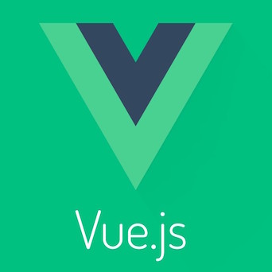
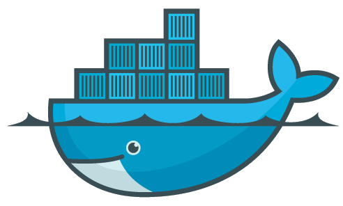
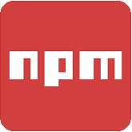

The Experience
Working at TestBest has honestly been as great of an experience out of college as I could have ever asked for.
Being there really showed me power of having a strong, coherent team. It was really empowering to be able to have everyone play off each others' strengths to get things done.
If I had to describe the environment in one word I would say it was "moving". It felt like a true "Startup" and although hectic at times, it pushed me to stay focused and be able to learn how to solve a problem quickly and efficiently.
Some Technologies I Learned There




These are some of the major technologies that I used over at TestBest.
This was a really valuable experience and allowed me to expand my skills greatly.